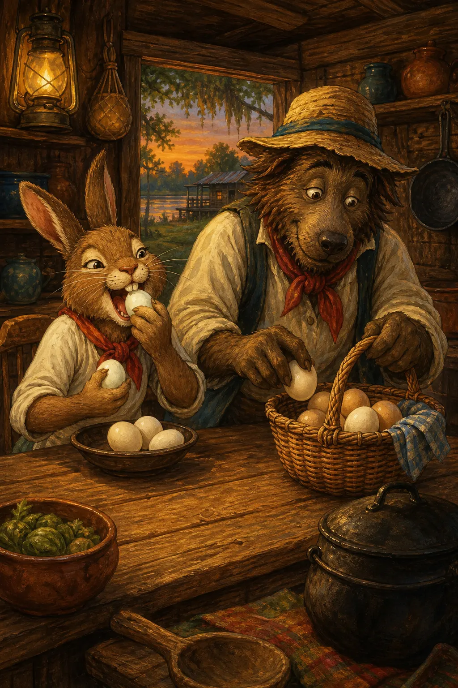

African diaspora trickster and folklore tales
Br’er Rabbit Stories
Age: 6+ · Popularity: Very High · Read time: 5 min read
Characters: Br’er Rabbit, Br’er Fox +1
4 fairy tales
African diaspora trickster and folklore tales: 4 tales to read online on Fairy Tales by Kamu, with illustrations and online reading.
Age: 6+ · Popularity: Very High · Read time: 5 min read
Characters: Br’er Rabbit, Br’er Fox +1
Age: 6+ · Popularity: High · Read time: 5 min read
Characters: Anansi / Aunt Nancy

Age: 6+ · Popularity: Medium · Read time: 7 min read
Characters: Compair Lapin, Bouki
Age: 8+ · Popularity: Medium · Read time: 6 min read
Characters: Boo Hag